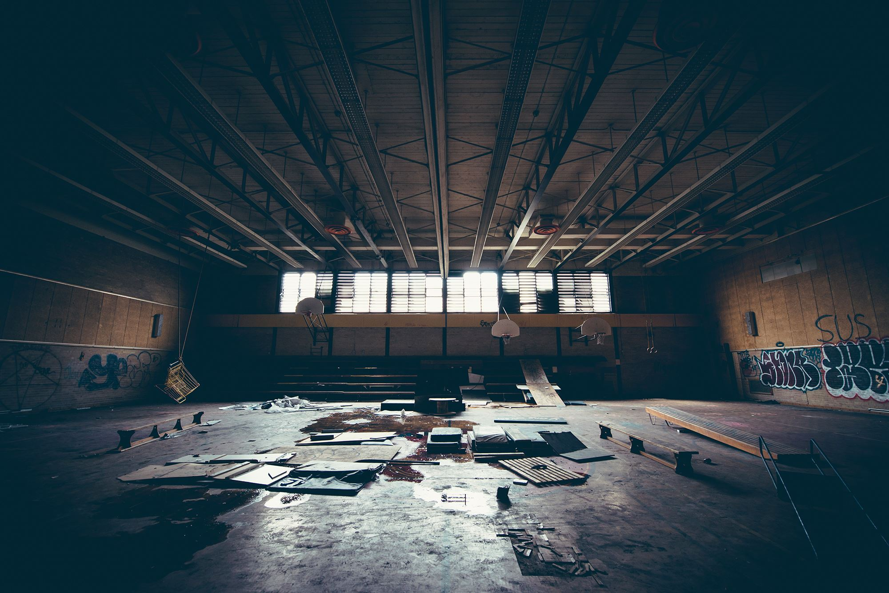

07.02.14

Goals
Create an impact for Stiir recognition this time around to setup future events
Make a first impression of what our team believes in
- Quality
- Uniqueness
- Experience
- Design (ie. imagery, branding, promotion)
- Causes
- Collaboration
- (More to add)
Send a message that inspires:
- If our message is about following your passion, it can speak to a common dilemma such as the crossroads of life (personal satisfaction vs financial comfort | how to acheive both?) - A relatable situation for our audience
- Does wisdom from the past help shape the ambition which creates the future?
- Future events will always revolving around a form of inspiration.
* these are points that can change over discussion as a team
Donations towards a Youth Charity
- Pick a charity that influences the youth in a way we believe in -- the charity we chose will be viewed in parallel with our message
- Set donation goal
- How will we make funds? Possible ways include:
- Donations
- Selling prints
- How much would our audience be willing to spend on prints?
- Selling Merch
- Charging at door
- Other ways to be discussed.
Fund future Stiir events
- We want to fund more galleries/events down the line and keep growing the brand.
- Should we split donations for charity and savings? If so, what is the percentage?
- How much will we need to cover costs as well as save?
Action List
Here are some tasks that need to be done and things we can start working on:
- Scheduling
- Photography
- Event name
- Branding concept
- Graphic design
- Web
- Video promotion
- Simple Animations
- Budget
- Venue descision
- Event proposal
- *
- Sponsorship levels / Sponsorship package
- Begin to contact potential sponsors
- Brainstorming gallery vision to help guide photographers
- Social media
- Setup Instagram/Twitter accounts
- Work out social media plan
- Find Printer
Experience planning
- More then just prints?
- Interactiveness
- Tangible Item to leave with (ie. newspaper)
- Process presentation
There will be a bunch more to discuss but these are just a few points. Hopefully we can all meet up soon, as well as get the photographers going.
Talk soon everyone!
Some Music: